Exercises that define and sculpt your chest help you look your best at the beach or the gym.
They can also help you do a variety of daily tasks, like lifting or pushing objects. On top of all that, while you
improve your look and strength, you lift your mood, too.
Working out the chest means working out the pectoral muscles, better known as the “pecs.” While
the pecs are the largest muscles in the chest, there are actually several smaller muscles that support the
pectoral muscles, including the latissimus dorsi muscles (or “lats”) on the sides of the chest and the trapezius
muscle around the shoulders.
Getting Started
To make sure you work all the chest muscles, include a mix of motions in your chest workout
routine:
Press using the flat or incline bench, dumbbells, or bar, or seated machine chest press.
Lift using the parallel bars, floor, or bench.
Pull using the cable fly bench, dumbbells, or cable crossovers.
If you’re a beginner, meet with a trainer to make sure you are following a good program with
proper form during the exercises. Consider starting with a lower weight to reduce your risk of injury. You should
be able to pick up the weight without too much strain. Remember, you can always go up in weight if the exercise
seems too easy.
The number of reps and sets you do depends on your goal:
To increase size, try 1 to 3 sets of 8-12 reps for new or intermediate lifters or 3-6 sets of
1-12 reps for seasoned lifters, of a weight that is at the higher end of your 1 rep max. Rest 1-2 minutes with
more reps and up to 3 minutes for higher weight, lower rep sets.
To increase strength, try 1 to 3 sets of 8-12 reps for new or intermediate lifters or 2-6 sets
of 1-8 reps for seasoned lifters, of a weight that is around 60-80 percent of your max, depending on your
experience. Rest 1-2 minutes with more reps and up to 3 minutes for higher weight, lower rep sets.
Exercise Name:
Direction
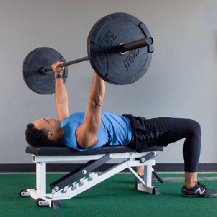
Barbell bench press
Equipment needed: barbell
Position yourself on the bench with your feet firmly on the ground and your back flat (the bar should be
directly over your eyes, and your head, shoulders, and buttocks should be on the bench).
Grasp the barbell with palms forward and thumbs wrapped around the bar. Move the bar into starting
position, with help from a spotter if needed.
Position the bar over your chin or upper chest, keeping your elbows and wrists straight.
Inhale and lower the bar slowly until it touches your chest below your armpits. As you lower, flare your
elbows out slightly.
Next, exhale and press the bar up, keeping your wrists straight and your back flat.
.
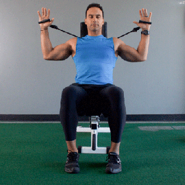
Pec deck
Resist the urge to add extra weight. Doing so could increase your risk of injury. This exercise isn’t for
you if you have had a shoulder injury. Here are the steps:
Keep your feet flat on the floor, at least shoulder-width apart.
With your back firmly against the seat, lift your arms until they reach shoulder level (the angle of
your elbows should be between 75 and 90 degrees). Place your elbows on the center of the pad on the wings
of the machine.
With smooth and slow movement, push the wings together, stopping just before they touch.
Inhale and lower the bar slowly until it touches your chest below your armpits. As you lower, flare your
elbows out slightly.
Reverse to the starting position slowly.
.
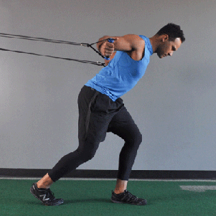
Bent forward cable crossover
Equipment needed: high pulley machine
Begin this exercise either with your feet planted hip-width apart, or with one in front of the other as
if you are walking.
Grasp the pulley handles with your arms straight out and facing inward, making sure that your hands are
below your shoulders and your elbows are bent a bit.
Make your movements slow and controlled — no jerking — as you bring your hands together and extend your
arms. For a wider arc and more resistance, move your arms down first and then in toward each other to
cross one hand over the other.
Bring your arms slowly back to the starting position with control. Don’t let your arms go back past the
shoulders.
.
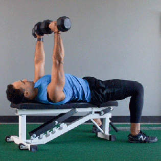
Chest press
Adjust the chest press bench so that you sit with knees bent slightly and your feet on the floor.
Grasp the handles, and exhale as you push them away until your arms are straight out. Keep your elbows
slightly bent.
As you inhale, pull the bars toward you slowly and with control, without letting the weights touch
.
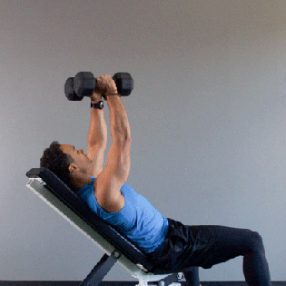
Inclined dumbbell flies
Equipment needed: set of dumbbells
Take a dumbbell in each hand and lie on a bench, feet firmly on the floor.
Press your shoulders, back, head, and buttocks to the bench. Position the dumbbells near your chest and
armpits with your palms facing inward. Keep your wrists straight.
Exhale, pull in your abs, and slowly press the dumbbells up directly above your chest. Your arms should
be shoulder-width apart. Keep your elbows straight but not locked.
Inhale and lower the dumbbells slowly in a wide arc until they are level with your chest. Keep the
dumbbells parallel.
“Fly” the dumbbells toward the ceiling in the same gentle arc.
.
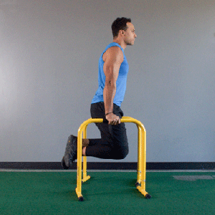
Dips
Grasp the parallel dip bars firmly and lift your body.
Keep your elbows straight, your head in line with your trunk, and your wrists in line with your
forearms.
Bring one leg across the other to stabilize the lower part of your body, and pull in your abs.
Exhale, and bend your elbows to lower your body. Keep your elbows near your sides. Your legs should be
directly under your body to avoid tilting or swinging.
Pause, and then straighten your elbows, pushing into the bars with your hands, and return to starting
position. Keep your body vertical and your wrists straight.
.
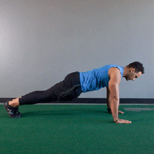
Pushups
Get the most from your pushups by paying close attention to your form.
Tighten your abdominals, keep your back flat, your neck in alignment with your spine, and keep your
elbows close to your sides.
With your hands directly under your shoulders, lower yourself slowly and with control.
Lastly, press up.
Best Back Exercises
Strengthening your back muscles can help prevent these types of injuries and ensure that your
entire body works smoothly, both during daily movements and during exercise.
When we talk about your back, which muscles are we targeting? Primary muscles in the back
include the:
lats, which are in the area below your armpits down the sides of your back
rhomboids, which are in the mid-upper back
traps, which run from your neck to your mid back
erector spinae, a group of muscles that run along your spine
All of the exercises below target a combination of these muscles.
The Warmup
Start with 5 to 10 minutes of moderate cardio to get your blood pumping and start to awaken
your muscles. Then do a five-minute stretching sequence to prep your back for targeted exercises. This routine is
a great starting point. Also, if at any point these moves cause you pain, stop what you’re doing and rest.
Exercise Name:
Directions:
Resistance band pull apart
Stand with your arms extended. Hold a resistance band taut in front of you with both hands so the band is parallel to the ground.
Keeping your arms straight, pull the band to your chest by moving your arms out to your sides. Initiate this movement from your mid back, squeezing your shoulder blades together and keeping your spine straight, then slowly return to start.
.
Quadruped dumbbell row
Get on all fours with a dumbbell positioned in each hand. Ensure your back is straight, hands are directly below shoulders, and knees are directly below hips.
Row up with your right arm, pulling your elbow up and bringing the dumbbell to your armpit. Keep your elbow tucked throughout the movement. You’ll notice here that if you row too far, you’ll lose your balance.
Extend your arm, returning the dumbbell to the ground, and repeat on the left side.
Complete 3 sets of 12 reps on each side.
.
Lat pulldown
If you’re using a machine, position the pad so it’s touching your thighs. Stand up and grab the bar wider than shoulder-width apart, sitting back down.
Begin to pull the bar down toward your chest, bending your elbows and directing them down to the ground. Engage your upper and mid back throughout this whole movement. Keep your torso straight, not allowing yourself to fall backward.
Complete 3 sets of 12 reps
.
Wide dumbbell row
Hold a dumbbell in each hand and hinge at the waist, stopping when your upper body forms a 20-degree angle with the ground. Your palms should be facing your thighs, and your neck should remain neutral. Allow the dumbbells to hang down in front of you.
Begin to row with your elbows at a 90-degree angle, pulling them up toward the sky. Squeeze your shoulder blades together at the top.
Return to start and repeat, completing 3 sets of 12 reps.
.
Barbell deadlift
Stand behind the barbell with your feet shoulder-width apart.
Keeping your chest lifted, begin to hinge at the hips and slowly bend your knees, reaching down to pick up the barbell. Keep your back straight and grasp the bar with both palms facing you in an overhand grip.
Push back up, keeping your feet flat on the floor, back into the starting position. Your back should remain straight throughout the movement. Your shoulders should be down and back.
Return to the starting position, pushing your hips back and bending your knees until you bring the barbell back to the ground.
Complete 3 sets of 12 reps.
.
Hyperextension
Lie down on an exercise ball with your abdomen on the center of the ball. Press the balls of your feet into the ground to stay balanced.
Extend your arms forward. Bending at your waist, slowly raise your upper body toward the sky. Be sure to engage your core and glutes. Keep your feet on the floor.
Pause for a moment when at the top, then slowly lower down.
Complete 3 sets of 12 reps.
.
‘Good morning’
If using weight, safely mount a barbell on your shoulders behind your head. Position your feet shoulder-width apart.
Hinging at your hips, soften your knees and drop your torso toward the ground, stopping when it’s parallel. Your back should remain straight throughout this movement.
Once you reach parallel, push through your feet and return to start. Complete 3 sets of 12 reps.
.
Single-arm dumbbell row
Position yourself on a bench so your left knee and shin are resting on it, as well as your left hand — this will be your support. Your right leg should be straight with your foot on the ground. Pick up the dumbbell with your right hand. Maintain a straight torso.
Row the dumbbell up, pulling your elbow toward the sky while keeping it close to your body. Squeeze your upper back as you pull your elbow up.
Slowly lower back down to the start position. Complete 3 sets of 12 reps on each side.
.
Renegade dumbbell row
Assume a high plank position with each of your hands on a dumbbell. Your body should form a straight line from your head to your toes. Your core should be engaged throughout the movement.
Row with your right arm, pulling your elbow toward the sky while keeping it close to your body, then returning the dumbbell to the ground. Ensure that your hips stay square to the ground.
Repeat with your left arm. Alternate, completing 20 total reps for 3 sets.
.
Wood chop
Grab the dumbbell or medicine ball with both hands. Hold it above your head with your arms extended. Pivot on your right foot slightly so your hips are rotated.
As you begin to squat down, rotate your hips to the left and bring the dumbbell or ball down to the outside of your left knee in a sweeping movement.
On the ascent, twist your trunk back toward the right and, keeping your arms straight, bring the dumbbell or ball back up above the right side of your head in an explosive but controlled movement. This movement should mimic a chopping motion, hence the name.
Complete 12 reps on each side for 3 sets total.
Best Exercises for Bigger, Stronger Arms
Having bigger, stronger arms can give you a feeling of confidence. Muscular arms can also convey a sense of athleticism and strength. But there are some important practical benefits to having stronger arms, too.
Anything that requires upper body effort — from picking up your kids to lifting heavy boxes — can be done more easily with stronger arms. In addition to boosting your daily functional fitness, having more muscle mass has the ability to:
increase your metabolism — this means your body will burn more calories, even when you’re not exercising
increase muscle endurance, strength, and tone
lower your chance of injury
The two main muscles in your upper arm are the biceps in the front and the triceps in the back. They’re opposite functioning muscle groups, so they require different types of exercises for strength training.
Exercise Name:
Direction
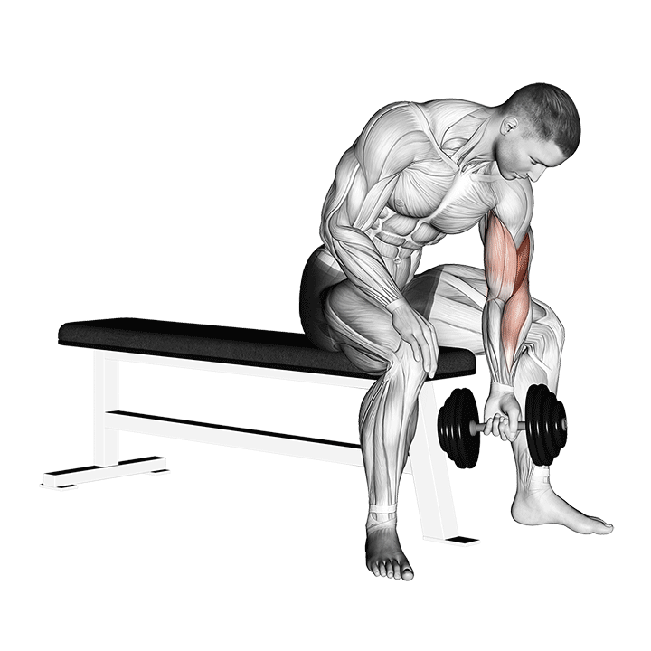
Concentration Curl
Equipment needed: dumbbell
Sit at the end of a flat bench with your legs open in a V shape.
Grip a dumbbell with one hand and lean forward slightly.
With your palm facing your center, rest your elbow against the inside of your thigh.
Rest your other hand or elbow on the other thigh for stability.
While keeping your upper body still, curl the weight slowly toward your shoulder.
As you lift, turn your wrist slightly so that you end the curl with your palm facing your shoulder.
Pause for a moment, allowing yourself to feel the effort in your bicep, and then slowly lower the weight. Don’t rest it on the floor, though, until your final repetition.
Repeat 12 to 15 times, then switch arms.
.
Cable Curl
Stand a couple of feet from the pulley machine, and grasp the cable handle with your palm facing forward and your elbow close to your side.
Place the foot opposite your curling hand a little in front of your other foot for better balance.
Slowly curl your arm, bringing your palm toward your shoulder.
Hold the curl up for a moment and feel the exertion in your bicep.
Slowly lower the handle to the starting position.
Do 12 to 15 repetitions, then switch arms.
.
Barbell curl
Equipment needed: barbell
Stand with your feet about shoulder-width apart.
Hold the barbell with your arms at your side, palms facing out.
While exhaling, slowly curl the barbell up toward your chest. Keep your chest still, using only your arms to lift the barbell.
Hold the position for a second, then slowly lower the barbell to its starting position.
Repeat 12 to 15 times.
.
Chinup
Stand under the chinup bar, and reach both arms up so that your palms are facing you.
Grab the bar with both hands. You may need to jump or step up to reach the bar.
With a firm grip and your thumbs wrapped around the bar, steady your body. It may help to cross your legs for more stability.
While exhaling slowly, pull your body upward by bending your elbows.
Keep your elbows in front of you as you focus on letting your biceps pull you up to where your chin meets the bar.
Pause for a moment, then slowly lower yourself to the starting position before repeating the move again.
.
Triangle pushup
Get into traditional pushup position with only your toes and hands touching the floor.
Place your hands below your face with your forefingers and thumbs touching, forming a triangle between your hands.
While keeping your torso and legs straight, slowly lower your body so that your nose comes close to your hands.
Push your body back up to its starting position, being careful not to arch your back or let it sag.
Repeat 12 to 15 times.
.
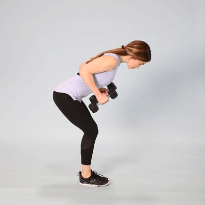
Tricep kickback
Equipment needed: dumbbell
Hold a dumbbell in each hand, with your palms facing inward. Bend your knees slightly.
Hinge forward at your waist, keeping your back straight and your core engaged, until your upper body is almost parallel to the floor.
With your arms close to your side, bend your elbows so that the dumbbells come up alongside the side of your chest.
Hold for a second, then bend your elbows until the dumbbells are in the starting position, close to your chest.
Repeat 12 to 15 times.
If only using one arm at a time, rest for a minute, then switch arms and repeat.
.
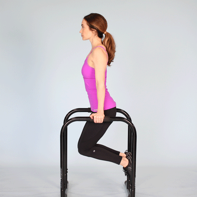
Dips
Stand in between the rails of a dip bar.
Grip each bar with your arms straight down by your side.
You may need to bend your knees to keep from touching the floor.
Slowly bend your elbows and lower yourself until your upper arms are almost parallel to the floor.
Straighten your arms until you’re back at your starting position.
Repeat 12 to 15 times.
.
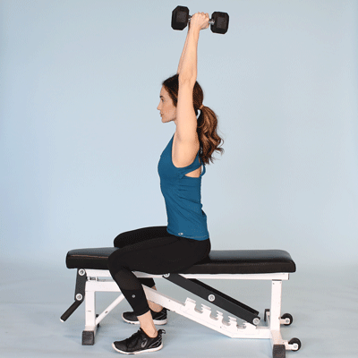
Overhead extension
Equipment needed: dumbbell
Stand with your feet about shoulder-width apart, with one foot slightly in front of the other for balance. You can also do this exercise while sitting on a bench.
Place both hands around the dumbbell handle.
Lift the dumbbell up over your head so that your arms are straight.
Slowly bend your elbows to a 90-degree angle so that the dumbbell finishes behind your head.
Slowly straighten your arms so that the weight is above your head again.